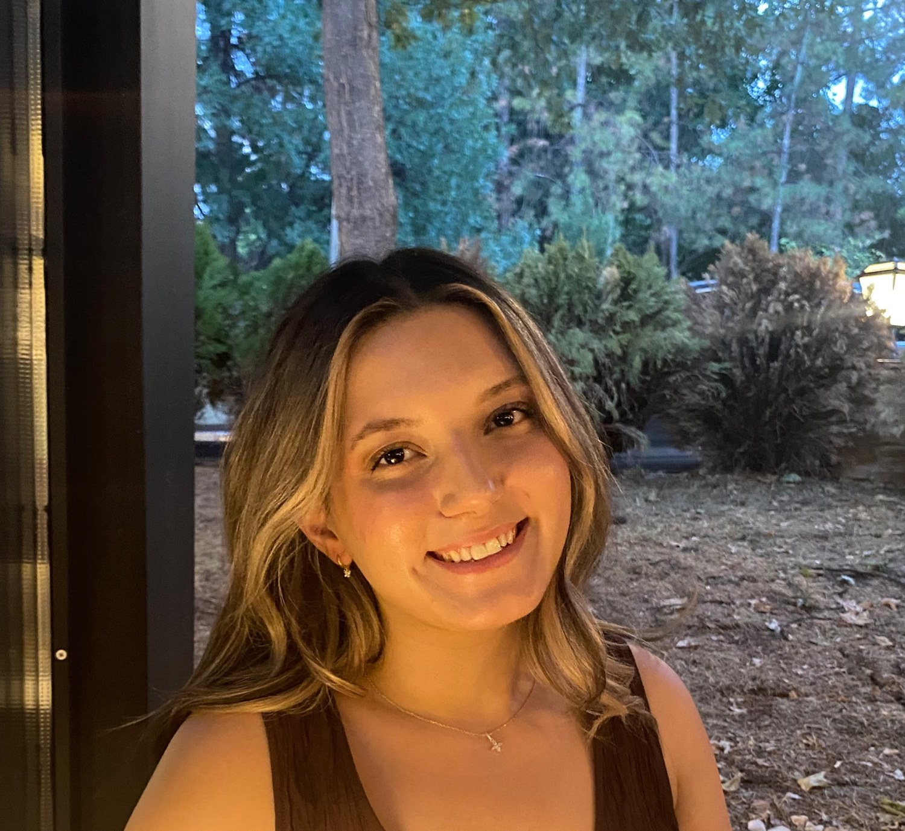

GEOMATICS ENGINEERING · HACETTEPE UNIVERSITY
Hello, I'm Zeynep.
Between the places I explore and the maps I create, I'm learning to see our world from a different perspective.
01 / 03Rize roots · Ankara days · Everywhere in between

01 — A LITTLE ABOUT ME
A curious mind.
A love for exploring.
I'm a fourth-year Geomatics Engineering student interested in remote sensing, satellite imagery and geographic stories. Outside the classroom, horses, travel and life's little moments mean a lot to me.
Read my story ↗02 — FIND YOUR WAY
Where to next?
“Every place has a story.
These are some of mine.”